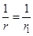
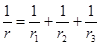
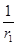
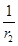
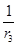

Система нормативных документов в строительстве
СТРОИТЕЛЬНЫЕ НОРМЫ И ПРАВИЛА
РОССИЙСКОЙ ФЕДЕРАЦИИ
БЕТОННЫЕ И ЖЕЛЕЗОБЕТОННЫЕ
КОНСТРУКЦИИ
Основные положения
СНиП 52-01-2003
Москва
ПРЕДИСЛОВИЕ
1 РАЗРАБОТАНЫ Государственным унитарным предприятием - Научно-исследовательским, проектно-конструкторским и технологическим институтом бетона и железобетона «ГУП НИИЖБ» Госстроя России
ВНЕСЕНЫ Управлением технормирования Госстроя России
2 УТВЕРЖДЕНЫ И ВВЕДЕНЫ В ДЕЙСТВИЕ постановлением Государственного комитета Российской Федерации по строительству и жилищно-коммунальному комплексу от 30.06.2003 г. № 127
3 ВЗАМЕН СНиП 2.03.01-84
СОДЕРЖАНИЕ
Настоящий нормативный документ (СНиП) содержит основные положения, определяющие общие требования к бетонным и железобетонным конструкциям, включая требования к бетону, арматуре, расчетам, конструированию, изготовлению, возведению и эксплуатации конструкций.
Детальные указания по расчетам, конструированию, изготовлению и эксплуатации содержат соответствующие нормативные документы (СНиП, своды правил), разрабатываемые для отдельных видов железобетонных конструкций в развитие данного СНиП (приложение В).
До издания соответствующих сводов правил и других развивающих СНиП документов допускается для расчета и конструирования бетонных и железобетонных конструкций использовать действующие в настоящее время нормативные, и рекомендательные документы.
В разработке настоящего документа принимали участие: А.И. Звездов, д-р техн. наук - руководитель темы; д-ра техн. наук: А.С. Залесов, Т.А. Мухамедиев, Е.А. Чистяков - ответственные исполнители.
СТРОИТЕЛЬНЫЕ НОРМЫ И ПРАВИЛА РОССИЙСКОЙ ФЕДЕРАЦИИ
БЕТОННЫЕ И ЖЕЛЕЗОБЕТОННЫЕ КОНСТРУКЦИИ
Основные положения
CONCRETE AND REINFORCED CONCRETE STRUCTURES
Principal rules
Дата введения 2004-03-01
Настоящие нормы и правила распространяются на все типы бетонных и железобетонных конструкций, применяемых в промышленном, гражданском, транспортном, гидротехническом и других областях строительства, изготавливаемых из всех видов бетона и арматуры и подвергаемых любым видам воздействий.
В настоящих нормах и правилах использованы ссылки на нормативные документы, приведенные в приложении А.
В настоящих нормах и правилах использованы термины и определения в соответствии с приложением Б.
4.1 Бетонные и железобетонные конструкции всех типов должны удовлетворять требованиям:
- по безопасности;
- по эксплуатационной пригодности;
- по долговечности, а также дополнительным требованиям, указанным в задании на проектирование.
4.2 Для удовлетворения требованиям по безопасности конструкции должны иметь такие начальные характеристики, чтобы с надлежащей степенью надежности при различных расчетных воздействиях в процессе строительства и эксплуатации зданий и сооружений были исключены разрушения любого характера или нарушения эксплуатационной пригодности, связанные с причинением вреда жизни или здоровью граждан, имуществу и окружающей среде.
4.3 Для удовлетворения требованиям по эксплуатационной пригодности конструкция должна иметь такие начальные характеристики, чтобы с надлежащей степенью надежности при различных расчетных воздействиях не происходило образование или чрезмерное раскрытие трещин, а также не возникали чрезмерные перемещения, колебания и другие повреждения, затрудняющие нормальную эксплуатацию (нарушение требований к внешнему виду конструкции, технологических требований по нормальной работе оборудования, механизмов, конструктивных требований по совместной работе элементов и других требований, установленных при проектировании).
В необходимых случаях конструкции должны иметь характеристики, обеспечивающие требования по теплоизоляции, звукоизоляции, биологической защите и др.
Требования по отсутствию трещин предъявляют к железобетонным конструкциям, у которых при полностью растянутом сечении должна быть обеспечена непроницаемость (находящихся под давлением жидкости или газов, испытывающих воздействие радиации и т.п.), к уникальным конструкциям, к которым предъявляют повышенные требования по долговечности, а также к конструкциям, эксплуатируемым при воздействии сильно агрессивной среды.
В остальных железобетонных конструкциях образование трещин допускается и к ним предъявляют требования по ограничению ширины раскрытия трещин.
4.4 Для удовлетворения требованиям долговечности конструкция должна иметь такие начальные характеристики, чтобы в течение установленного длительного времени она удовлетворяла бы требованиям по безопасности и эксплуатационной пригодности с учетом влияния на геометрические характеристики конструкций и механические характеристики материалов различных расчетных воздействий (длительное действие нагрузки, неблагоприятные климатические, технологические, температурные и влажностные воздействия, попеременное замораживание и оттаивание, агрессивные воздействия и др.).
4.5 Безопасность, эксплуатационную пригодность, долговечность бетонных и железобетонных конструкций и другие устанавливаемые заданием на проектирование требования должны быть обеспечены выполнением:
- требований к бетону и его составляющим;
- требований к арматуре;
- требований к расчетам конструкций;
- конструктивных требований;
- технологических требований;
- требований по эксплуатации.
Требования по нагрузкам и воздействиям, по пределу огнестойкости, по непроницаемости, по морозостойкости, по предельным показателям деформаций (прогибам, перемещениям, амплитуде колебаний), по расчетным значениям температуры наружного воздуха и относительной влажности окружающей среды, по защите строительных конструкций от воздействия агрессивных сред и др. устанавливаются соответствующими нормативными документами (СНиП 2.01.07, СНиП 2.06.04, СНиП II-7, СНиП 2.03.11, СНиП 21-01, СНиП 2.02.01, СНиП 2.05.03, СНиП 33-01, СНиП 2.06.06, СНиП 23-01, СНиП 32-04).
4.6 При проектировании бетонных и железобетонных конструкций надежность конструкций устанавливают согласно ГОСТ 27751 полувероятностным методом расчета путем использования расчетных значений нагрузок и воздействий, расчетных характеристик бетона и арматуры (или конструкционной стали), определяемых с помощью соответствующих частных коэффициентов надежности по нормативным значениям этих характеристик, с учетом уровня ответственности зданий и сооружений.
Нормативные значения нагрузок и воздействий, значения коэффициентов надежности по нагрузке, а также коэффициентов надежности по назначению конструкций устанавливают соответствующими нормативными документами для строительных конструкций.
Расчетные значения нагрузок и воздействий принимают в зависимости от вида расчетного предельного состояния и расчетной ситуации.
Уровень надежности расчетных значений характеристик материалов устанавливают в зависимости от расчетной ситуации и от опасности достижения соответствующего предельного состояния и регулируют значением коэффициентов надежности по бетону и арматуре (или конструкционной стали).
Расчет бетонных и железобетонных конструкций можно производить по заданному значению надежности на основе полного вероятностного расчета при наличии достаточных данных об изменчивости основных факторов, входящих в расчетные зависимости.
5.1.1 При проектировании бетонных и железобетонных сооружений в соответствии с требованиями, предъявляемыми к конкретным конструкциям, должны быть установлены вид бетона, его нормируемые и контролируемые показатели качества (ГОСТ 25192, ГОСТ 4.212).
5.1.2 Для бетонных и железобетонных конструкций следует применять виды бетона, отвечающие функциональному назначению конструкций и требованиям, предъявляемым к ним, согласно действующим стандартам (ГОСТ 25192, ГОСТ 26633, ГОСТ 25820, ГОСТ 25485, ГОСТ 20910, ГОСТ 25214, ГОСТ 25246, ГОСТ Р 51263).
5.1.3 Основными нормируемыми и контролируемыми показателями качества бетона являются:
- класс по прочности на сжатие B;
- класс по прочности на осевое растяжение Bt;
- марка по морозостойкости F;
- марка по водонепроницаемости W;
- марка по средней плотности D.
Класс бетона по прочности на сжатие B соответствует значению кубиковой прочности бетона на сжатие в МПа с обеспеченностью 0,95 (нормативная кубиковая прочность) и принимается в пределах от B 0,5 до B 120.
Класс бетона по прочности на осевое растяжение Bt соответствует значению прочности бетона на осевое растяжение в МПа с обеспеченностью 0,95 (нормативная прочность бетона) и принимается в пределах от Bt 0,4 до Bt 6.
Допускается принимать иное значение обеспеченности прочности бетона на сжатие и осевое растяжение в соответствии с требованиями нормативных документов для отдельных специальных видов сооружений (например, для массивных гидротехнических сооружений).
Марка бетона по морозостойкости F соответствует минимальному числу циклов попеременного замораживания и оттаивания, выдерживаемых образцом при стандартном испытании, и принимается в пределах от F 15 до F 1000.
Марка бетона по водонепроницаемости W соответствует максимальному значению давления воды (МПа · 10-1), выдерживаемому бетонным образцом при испытании, и принимается в пределах от W 2 до W 20.
Марка по средней плотности D соответствует среднему значению объемной массы бетона в кг/м3 и принимается в пределах от D 200 до D 5000.
Для напрягающих бетонов устанавливают марку по самонапряжению.
При необходимости устанавливают дополнительные показатели качества бетона, связанные с теплопроводностью, температуростойкостью, огнестойкостью, коррозионной стойкостью (как самого бетона, так и находящейся в нем арматуры), биологической защитой и с другими требованиями, предъявляемыми к конструкции (СНиП 23-02, СНиП 2.03.11).
Показатели качества бетона должны быть обеспечены соответствующим проектированием состава бетонной смеси (на основе характеристик материалов для бетона и требований к бетону), технологией приготовления бетона и производства работ. Показатели бетона контролируют в процессе производства и непосредственно в конструкции.
Необходимые показатели бетона следует устанавливать при проектировании бетонных и железобетонных конструкций в соответствии с расчетом и условиями эксплуатации с учетом различных воздействий окружающей среды и защитных свойств бетона по отношению к принятому виду арматуры.
Классы и марки бетона следует назначать в соответствии с их параметрическими рядами, установленными нормативными документами.
Класс бетона по прочности на сжатие B назначают во всех случаях.
Класс бетона по прочности на осевое растяжение Bt назначают в случаях, когда эта характеристика имеет главенствующее значение и ее контролируют на производстве.
Марку бетона по морозостойкости F назначают для конструкций, подвергающихся действию попеременного замораживания и оттаивания.
Марку бетона по водонепроницаемости W назначают для конструкций, к которым предъявляют требования по ограничению водопроницаемости.
Возраст бетона, отвечающий его классу по прочности на сжатие и по прочности на осевое растяжение (проектный возраст), назначают при проектировании исходя из возможных реальных сроков загружения конструкций проектными нагрузками с учетом способа возведения и условий твердения бетона. При отсутствии этих данных класс бетона устанавливают в проектном возрасте 28 суток.
5.2.1 Основными показателями прочности и деформативности бетона являются нормативные значения их прочностных и деформационных характеристик.
Основными прочностными характеристиками бетона являются нормативные значения:
- сопротивления бетона осевому сжатию Rb,n;
- сопротивления бетона осевому растяжению Rbt,n.
Нормативное значение сопротивления бетона осевому сжатию (призменная прочность) следует устанавливать в зависимости от нормативного значения прочности образцов-кубов (нормативная кубиковая прочность) для соответствующего вида бетона и контролируемого на производстве.
Нормативное значение сопротивления бетона осевому растяжению при назначении класса бетона по прочности на сжатие следует устанавливать в зависимости от нормативного значения прочности на сжатие образцов-кубов для соответствующего вида бетона и контролируемого на производстве.
Соотношение между нормативными значениями призменной и кубиковой прочностями бетона на сжатие, а также соотношение между нормативными значениями прочности бетона на растяжение и прочности бетона на сжатие для соответствующего вида бетона следует устанавливать на основе стандартных испытаний.
При назначении класса бетона по прочности на осевое растяжение нормативное значение сопротивления бетона осевому растяжению принимают равным числовой характеристике класса бетона по прочности на осевое растяжение, контролируемой на производстве.
Основными деформационными характеристиками бетона являются нормативные значения:
- предельных относительных деформаций бетона при осевом сжатии и растяжении εbo,n и εbto,n;
- начального модуля упругости бетона Eb,п.
Кроме того, устанавливают следующие деформационные характеристики:
- начальный коэффициент поперечной деформации бетона v;
- модуль сдвига бетона G;
- коэффициент температурной деформации бетона αbt;
- относительные деформации ползучести бетона εcr (или соответствующие им характеристику ползучести φb,cr, меру ползучести Cb,cr);
- относительные деформации усадки бетона εshr.
Нормативные значения деформационных характеристик бетона следует устанавливать в зависимости от вида бетона, класса бетона по прочности на сжатие, марки бетона по средней плотности, а также в зависимости от технологических параметров бетона, если они известны (состава и характеристики бетонной смеси, способов твердения бетона и других параметров).
5.2.2 В качестве обобщенной характеристики механических свойств бетона при одноосном напряженном состоянии следует принимать нормативную диаграмму состояния (деформирования) бетона, устанавливающую связь между напряжениями σb,n (σbt,n) и продольными относительными деформациями εb,n (εbt,n) сжатого (растянутого) бетона при кратковременном действии однократно приложенной нагрузки (согласно стандартным испытаниям) вплоть до их нормативных значений.
5.2.3 Основными расчетными прочностными характеристиками бетона, используемыми в расчете, являются расчетные значения сопротивления бетона:
- осевому сжатию Rb;
- осевому растяжению Rbt.
Расчетные значения прочностных характеристик бетона следует определять делением нормативных значений сопротивления бетона осевому сжатию и растяжению на соответствующие коэффициенты надежности по бетону при сжатии и растяжении.
Значения коэффициентов надежности следует принимать в зависимости от вида бетона, расчетной характеристики бетона, рассматриваемого предельного состояния, но не менее:
для коэффициента надежности по бетону при сжатии:
1,3 - для предельных состояний первой группы;
1,0 - для предельных состояний второй группы;
для коэффициента надежности по бетону при растяжении:
1,5 - для предельных состояний первой группы при назначении класса бетона по прочности на сжатие;
1,3 - то же, при назначении класса бетона по прочности на осевое растяжение;
1,0 - для предельных состояний второй группы.
Расчетные значения основных деформационных характеристик бетона для предельных состояний первой и второй групп следует принимать равными их нормативным значениям.
Влияние характера нагрузки, окружающей среды, напряженного состояния бетона, конструктивных особенностей элемента и других факторов, не отражаемых непосредственно в расчетах, следует учитывать в расчетных прочностных и деформационных характеристиках бетона коэффициентами условий работы бетона γbi.
5.2.4 Расчетные диаграммы состояния (деформирования) бетона следует определять путем замены нормативных значений параметров диаграмм на их соответствующие расчетные значения, принимаемые по указаниям 5.2.3.
5.2.5 Значения прочностных характеристик бетона при плоском (двухосном) или объемном (трехосном) напряженном состоянии следует определять с учетом вида и класса бетона из критерия, выражающего связь между предельными значениями напряжений, действующих в двух или трех взаимно перпендикулярных направлениях.
Деформации бетона следует определять с учетом плоского или объемного напряженных состояний.
5.2.6 Характеристики бетона - матрицы в дисперсно-армированных конструкциях следует принимать как для бетонных и железобетонных конструкций.
Характеристики фибробетона в фибробетонных конструкциях следует устанавливать в зависимости от характеристик бетона, относительного содержания, формы, размеров и расположения фибр в бетоне, ее сцепления с бетоном и физико-механических свойств, а также в зависимости от размеров элемента или конструкции.
5.3.1 При проектировании железобетонных зданий и сооружений в соответствии с требованиями, предъявляемыми к бетонным и железобетонным конструкциям, должны быть установлены вид арматуры, ее нормируемые и контролируемые показатели качества.
5.3.2 Для железобетонных конструкций следует применять следующие виды арматуры, установленные соответствующими стандартами:
- горячекатаную гладкую и периодического профиля диаметром 3-80 мм;
- термомеханически упрочненную периодического профиля диаметром 6-40 мм;
- механически упрочненную в холодном состоянии (холоднодеформированная) периодического профиля или гладкая, диаметром 3-12 мм;
- арматурные канаты диаметром 6-15 мм;
- неметаллическую композитную арматуру.
Кроме того, в большепролетных конструкциях могут быть применены стальные канаты (спиральные, двойной свивки, закрытые).
Для дисперсного армирования бетона следует применять фибру или частые сетки.
Для сталежелезобетонных конструкций (конструкций, состоящих из стальных и железобетонных элементов) применяют листовую и профильную сталь по соответствующим нормам и стандартам (СНиП II-23).
Вид арматуры следует принимать в зависимости от назначения конструкции, конструктивного решения, характера нагрузок и воздействий окружающей среды.
5.3.3 Основным нормируемым и контролируемым показателем качества стальной арматуры является класс арматуры по прочности на растяжение, обозначаемый:
А - для горячекатаной и термомеханически упрочненной арматуры;
В - для холоднодеформированной арматуры;
К - для арматурных канатов.
Класс арматуры соответствует гарантированному значению предела текучести (физического или условного) в МПа, устанавливаемому в соответствии с требованиями стандартов и технических условий, и принимается в пределах от A 240 до A 1500, от B 500 до B 2000 и от K 1400 до K 2500.
Классы арматуры следует назначать в соответствии с их параметрическими рядами, установленными нормативными документами.
Кроме требований по прочности на растяжение к арматуре предъявляют требования по дополнительным показателям, определяемым по соответствующим стандартам: свариваемость, выносливость, пластичность, стойкость против коррозионного растрескивания, релаксационная стойкость, хладостойкость, стойкость при высоких температурах, относительное удлинение при разрыве и др.
К неметаллической арматуре (в том числе фибре) предъявляют также требования по щелочестойкости и адгезии к бетону.
Необходимые показатели принимают при проектировании железобетонных конструкций в соответствии с требованиями расчетов и изготовления, а также в соответствии с условиями эксплуатации конструкций с учетом различных воздействий окружающей среды.
5.4.1 Основными показателями прочности и деформативности арматуры являются нормативные значения их прочностных и деформационных характеристик.
Основной прочностной характеристикой арматуры при растяжении (сжатии) является нормативное значение сопротивления Rs,n, равное значению физического предела текучести или условного, соответствующего остаточному удлинению (укорочению), равному 0,2 %. Кроме того, нормативные значения сопротивления арматуры при сжатии ограничивают значениями, отвечающими деформациям, равным предельным относительным деформациям укорочения бетона, окружающего рассматриваемую сжатую арматуру.
Основными деформационными характеристиками арматуры являются нормативные значения:
- относительных деформаций удлинения арматуры εs0,n при достижении напряжениями нормативных значений Rs,n;
- модуля упругости арматуры Es,n.
Для арматуры с физическим пределом текучести нормативные значения относительной деформации удлинения арматуры εs0,п определяют как упругие относительные деформации при нормативных значениях сопротивления арматуры и ее модуля упругости.
Для арматуры с условным пределом текучести нормативные значения относительной деформации удлинения арматуры εs0,n определяют как сумму остаточного удлинения арматуры, равного 0,2 %, и упругих относительных деформаций при напряжении, равном условному пределу текучести.
Для сжатой арматуры нормативные значения относительной деформации укорочения принимают такими же, как при растяжении, за исключением специально оговоренных случаев, но не более предельных относительных деформаций укорочения бетона.
Нормативные значения модуля упругости арматуры при сжатии и растяжении принимают одинаковыми и устанавливают для соответствующих видов и классов арматуры.
5.4.2 В качестве обобщенной характеристики механических свойств арматуры следует принимать нормативную диаграмму состояния (деформирования) арматуры, устанавливающую связь между напряжениями σs,n и относительными деформациями εs,n арматуры при кратковременном действии однократно приложенной нагрузки (согласно стандартным испытаниям) вплоть до достижения их установленных нормативных значений.
Диаграммы состояния арматуры при растяжении и сжатии принимают одинаковыми, за исключением случаев, когда рассматривается работа арматуры, в которой ранее были неупругие деформации противоположного знака.
Характер диаграммы состояния арматуры устанавливают в зависимости от вида арматуры.
5.4.3 Расчетные значения сопротивления арматуры Rs определяют делением нормативных значений сопротивления арматуры на коэффициент надежности по арматуре.
Значения коэффициента надежности следует принимать в зависимости от класса арматуры и рассматриваемого предельного состояния, но не менее:
при расчете по предельным состояниям первой группы - 1,1;
при расчете по предельным состояниям второй группы - 1,0.
Расчетные значения модуля упругости арматуры Es принимают равными их нормативным значениям.
Влияние характера нагрузки, окружающей среды, напряженного состояния арматуры, технологических факторов и других условий работы, не отражаемых непосредственно в расчетах, следует учитывать в расчетных прочностных и деформационных характеристиках арматуры коэффициентами условий работы арматуры γsi.
5.4.4 Расчетные диаграммы состояния арматуры следует определять путем замены нормативных значений параметров диаграмм на их соответствующие расчетные значения, принимаемые по указаниям 5.4.3.
6.1.1 Расчеты бетонных и железобетонных конструкций следует производить в соответствии с требованиями ГОСТ 27751 по методу предельных состояний, включающему:
- предельные состояния первой группы, приводящие к полной непригодности эксплуатации конструкций;
- предельные состояния второй группы, затрудняющие нормальную эксплуатацию конструкций или уменьшающие долговечность зданий и сооружений по сравнению с предусматриваемым сроком службы.
Расчеты должны обеспечивать надежность зданий или сооружений в течение всего срока их службы, а также при производстве работ в соответствии с требованиями, предъявляемыми к ним.
Расчеты по предельным состояниям первой группы включают:
- расчет по прочности;
- расчет по устойчивости формы (для тонкостенных конструкций);
- расчет по устойчивости положения (опрокидывание, скольжение, всплывание).
Расчеты по прочности бетонных и железобетонных конструкций следует производить из условия, по которому усилия, напряжения и деформации в конструкциях от различных воздействий с учетом начального напряженного состояния (преднапряжение, температурные и другие воздействия) не должны превышать соответствующих значений, установленных нормами.
Расчеты по устойчивости формы конструкции, а также по устойчивости положения (с учетом совместной работы конструкции и основания, их деформационных свойств, сопротивления сдвигу по контакту с основанием и других особенностей) следует производить согласно указаниям нормативных документов на отдельные виды конструкций.
В необходимых случаях в зависимости от вида и назначения конструкции должны быть произведены расчеты по предельным состояниям, связанным с явлениями, при которых возникает необходимость прекращения эксплуатации (чрезмерные деформации, сдвиги в соединениях и другие явления).
Расчеты по предельным состояниям второй группы включают:
- расчет по образованию трещин;
- расчет по раскрытию трещин;
- расчет по деформациям.
Расчет бетонных и железобетонных конструкций по образованию трещин следует производить из условия, по которому усилия, напряжения или деформации в конструкциях от различных воздействий не должны превышать соответствующих их предельных значений, воспринимаемых конструкцией при образовании трещин.
Расчет железобетонных конструкций по раскрытию трещин производят из условия, по которому ширина раскрытия трещин в конструкции от различных воздействий не должна превышать предельно допустимых значений, устанавливаемых в зависимости от требований, предъявляемых к конструкции, условий ее эксплуатации, воздействия окружающей среды и характеристик материалов с учетом особенностей коррозионного поведения арматуры.
Расчет бетонных и железобетонных конструкций по деформациям следует производить из условия, по которому прогибы, углы поворота, перемещения и амплитуды колебания конструкций от различных воздействий не должны превышать соответствующих предельно допустимых значений.
Для конструкций, в которых не допускается образование трещин, должны быть обеспечены требования по отсутствию трещин. В этом случае расчет по раскрытию трещин не производят.
Для остальных конструкций, в которых допускается образование трещин, расчет по образованию трещин производят для определения необходимости расчета по раскрытию трещин и учета трещин при расчете по деформациям.
6.1.2 Расчет бетонных и железобетонных конструкций по долговечности (исходя из расчетов по предельным состояниям первой и второй групп) следует производить из условия, по которому при заданных характеристиках конструкции (размерах, количестве арматуры и других характеристиках), показателях качества бетона (прочности, морозостойкости, водонепроницаемости, коррозионной стойкости, температуростойкости и других показателях) и арматуры (прочности, коррозионной стойкости и других показателях) с учетом влияния окружающей среды продолжительность межремонтного периода и срока службы конструкций здания или сооружения должна быть не менее установленной для конкретных типов зданий и сооружений.
Кроме того, в необходимых случаях следует производить расчеты по теплопроводности, звукоизоляции, биологической защите и другим параметрам.
6.1.3 Расчет бетонных и железобетонных конструкций (линейных, плоскостных, пространственных, массивных) по предельным состояниям первой и второй групп производят по напряжениям, усилиям, деформациям и перемещениям, вычисленным от внешних воздействий в конструкциях и образуемых ими системах зданий и сооружений с учетом физической нелинейности (неупругих деформаций бетона и арматуры), возможного образования трещин и в необходимых случаях - анизотропии, накопления повреждений и геометрической нелинейности (влияние деформаций на изменение усилий в конструкциях).
Физическую нелинейность и анизотропию следует учитывать в определяющих соотношениях, связывающих между собой напряжения и деформации (или усилия и перемещения), а также в условиях прочности и трещиностойкости материала.
В статически неопределимых конструкциях следует учитывать перераспределение усилий в элементах системы вследствие образования трещин и развития неупругих деформаций в бетоне и арматуре вплоть до возникновения предельного состояния в элементе. При отсутствии методов расчета, учитывающих неупругие свойства железобетона, или данных о неупругой работе железобетонных элементов допускается производить определение усилий и напряжений в статически неопределимых конструкциях и системах в предположении упругой работы железобетонных элементов. При этом рекомендуется учитывать влияние физической нелинейности путем корректировки результатов линейного расчета на основе данных экспериментальных исследований, нелинейного моделирования, результатов расчета аналогичных объектов и экспертных оценок.
При расчете конструкций по прочности, деформациям, образованию и раскрытию трещин на основе метода конечных элементов должны быть проверены условия прочности и трещиностойкости для всех конечных элементов, составляющих конструкцию, а также условия возникновения чрезмерных перемещений конструкции. При оценке предельного состояния по прочности допускается полагать отдельные конечные элементы разрушенными, если это не влечет за собой прогрессирующего разрушения здания или сооружения и по истечении действия рассматриваемой нагрузки эксплуатационная пригодность здания или сооружения сохраняется или может быть восстановлена.
Определение предельных усилий и деформаций в бетонных и железобетонных конструкциях следует производить на основе расчетных схем (моделей), наиболее близко отвечающих реальному физическому характеру работы конструкций и материалов в рассматриваемом предельном состоянии.
Несущую способность железобетонных конструкций, способных претерпевать достаточные пластические деформации (в частности, при использовании арматуры с физическим пределом текучести), допускается определять методом предельного равновесия.
6.1.4 При расчетах бетонных и железобетонных конструкций по предельным состояниям следует рассматривать различные расчетные ситуации в соответствии с ГОСТ 27751.
6.1.5 Расчеты бетонных и железобетонных конструкций следует производить на все виды нагрузок, отвечающих функциональному назначению зданий и сооружений, с учетом влияния окружающей среды (климатических воздействий и воды - для конструкций, окруженных водой), а в необходимых случаях - с учетом воздействия пожара, технологических температурных и влажностных воздействий и воздействий агрессивных химических сред.
6.1.6. Расчеты бетонных и железобетонных конструкций производят на действие изгибающих моментов, продольных сил, поперечных сил и крутящих моментов, а также на местное действие нагрузки.
6.1.7 При расчетах бетонных и железобетонных конструкций следует учитывать особенности свойств различных видов бетона и арматуры, влияния на них характера нагрузки и окружающей среды, способов армирования, совместность работы арматуры и бетона (при наличии и отсутствии сцепления арматуры с бетоном), технологию изготовления конструктивных типов железобетонных элементов зданий и сооружений.
Расчет предварительно напряженных конструкций следует производить с учетом начальных (предварительных) напряжений и деформаций в арматуре и бетоне, потерь предварительного напряжения и особенностей передачи предварительного напряжения на бетон.
Расчет сборно-монолитных и сталежелезобетонных конструкций следует производить с учетом начальных напряжений и деформаций, полученных сборными железобетонными или стальными несущими элементами от действия нагрузок при укладке монолитного бетона до набора его прочности и обеспечения совместной работы со сборными железобетонными или стальными несущими элементами. При расчете сборно-монолитных и сталежелезобетонных конструкций должна быть обеспечена прочность контактных швов сопряжения сборных железобетонных и стальных несущих элементов с монолитным бетоном, осуществляемая за счет трения, сцепления по контакту материалов или путем устройства шпоночных соединений, выпусков арматуры и специальных анкерных устройств.
В монолитных конструкциях должна быть обеспечена прочность конструкции с учетом рабочих швов бетонирования.
При расчете сборных конструкций должна быть обеспечена прочность узловых и стыковых сопряжений сборных элементов, осуществленная путем соединения стальных закладных деталей, выпусков арматуры и замоноличивания бетоном.
Расчет дисперсно-армированных конструкций (фибробетонных, армоцементных) следует производить с учетом характеристик дисперсно-армированного бетона, дисперсной арматуры и особенностей работы дисперсно-армированных конструкций.
6.1.8 При расчете плоских и пространственных конструкций, подвергаемых силовым воздействиям в двух взаимно перпендикулярных направлениях, рассматривают отдельные, выделенные из конструкции плоские или пространственные малые характерные элементы с усилиями, действующими по боковым сторонам элемента. При наличии трещин эти усилия определяют с учетом расположения трещин, жесткости арматуры (осевой и тангенциальной), жесткости бетона (между трещинами и в трещинах) и других особенностей. При отсутствии трещин усилия определяют как для сплошного тела.
Допускается при наличии трещин определять усилия в предположении упругой работы железобетонного элемента.
Расчет элементов следует производить по наиболее опасным сечениям, расположенным под углом по отношению к направлению действующих на элемент усилий, на основе расчетных моделей, учитывающих работу растянутой арматуры в трещине и работу бетона между трещинами в условиях плоского напряженного состояния.
Расчет плоских и пространственных конструкций допускается производить для конструкции в целом на основе метода предельного равновесия, в том числе с учетом деформированного состояния к моменту разрушения, а также с использованием упрошенных расчетных моделей.
6.1.9 При расчете массивных конструкций, подвергаемых силовым воздействиям в трех взаимно перпендикулярных направлениях, рассматривают отдельные выделенные из конструкции малые объемные характерные элементы с усилиями, действующими по граням элемента. При этом усилия следует определять на основе предпосылок, аналогичных принятым для плоскостных элементов (см. 6.1.8).
Расчет элементов следует производить по наиболее опасным сечениям, расположенным под углом по отношению к направлению действующих на элемент усилий, на основе расчетных моделей, учитывающих работу бетона и арматуры в условиях объемного напряженного состояния.
6.1.10 Для конструкций сложной конфигурации (например, пространственных), кроме расчетных методов оценки несущей способности, трещиностойкости и деформативности, могут быть использованы также результаты испытания физических моделей.
6.2.1. Расчет бетонных и железобетонных элементов по прочности производят:
- по нормальным сечениям (при действии изгибающих моментов и продольных сил) по нелинейной деформационной модели, а для простых по конфигурации элементов - по предельным усилиям;
- по наклонным сечениям (при действии поперечных сил), по пространственным сечениям (при действии крутящих моментов), на местное действие нагрузки (местное сжатие, продавливание) - по предельным усилиям.
Расчет по прочности коротких железобетонных элементов (коротких консолей и других элементов) производят на основе каркасно-стержневой модели.
6.2.2 Расчет по прочности бетонных и железобетонных элементов по предельным усилиям производят из условия, по которому усилие F от внешних нагрузок и воздействий в рассматриваемом сечении не должно превышать предельного усилия Fult, которое может быть воспринято элементом в этом сечении
Расчет бетонных элементов по прочности
6.2.3 Бетонные элементы в зависимости от условий их работы и требований, предъявляемых к ним, следует рассчитывать по нормальным сечениям по предельным усилиям без учета (6.2.4) или с учетом (6.2.5) сопротивления бетона растянутой зоны.
6.2.4 Без учета сопротивления бетона растянутой зоны производят расчет внецентренно сжатых бетонных элементов при значениях эксцентриситета продольной силы, не превышающих 0,9 расстояния от центра тяжести сечения до наиболее сжатого волокна. При этом предельное усилие, которое может быть воспринято элементом, определяют по расчетным сопротивлениям бетона сжатию Rb, равномерно распределенным по условной сжатой зоне сечения с центром тяжести, совпадающим с точкой приложения продольной силы.
Для массивных бетонных конструкций гидротехнических сооружений следует принимать в сжатой зоне треугольную эпюру напряжений, не превышающих расчетного значения сопротивления бетона сжатию Rb. При этом эксцентриситет продольной силы относительно центра тяжести сечения не должен превышать 0,65 расстояния от центра тяжести до наиболее сжатого волокна бетона.
6.2.5 С учетом сопротивления бетона растянутой зоны производят расчет внецентренно сжатых бетонных элементов с эксцентриситетом продольной силы, большим указанных в 6.2.4, изгибаемых бетонных элементов (которые допускаются к применению), а также внецентренно сжатых элементов с эксцентриситетом продольной силы, указанным в 6.2.4, но в которых по условиям эксплуатации не допускается образование трещин. При этом предельное усилие, которое может быть воспринято сечением элемента, определяют как для упругого тела при максимальных растягивающих напряжениях, равных расчетному значению сопротивления бетона растяжению Rbt.
6.2.6 При расчете внецентренно сжатых бетонных элементов следует учитывать влияние продольного изгиба и случайных эксцентриситетов.
Расчет железобетонных элементов по прочности нормальных сечений
6.2.7 Расчет железобетонных элементов по предельным усилиям следует производить, определяя предельные усилия, которые могут быть восприняты бетоном и арматурой в нормальном сечении, из следующих положений:
- сопротивление бетона растяжению принимают равным нулю;
- сопротивление бетона сжатию представляется напряжениями, равными расчетному сопротивлению бетона сжатию и равномерно распределенными по условной сжатой зоне бетона;
- растягивающие и сжимающие напряжения в арматуре принимаются не более расчетного сопротивления соответственно растяжению и сжатию.
6.2.8 Расчет железобетонных элементов по нелинейной деформационной модели производят на основе диаграмм состояния бетона и арматуры исходя из гипотезы плоских сечений. Критерием прочности нормальных сечений является достижение предельных относительных деформаций в бетоне или арматуре.
6.2.9 При расчете внецентренно сжатых элементов следует учитывать случайный эксцентриситет и влияние продольного изгиба.
Расчет железобетонных элементов по прочности наклонных сечений
6.2.10 Расчет железобетонных элементов по прочности наклонных сечений производят: по наклонному сечению на действие поперечной силы, по наклонному сечению на действие изгибающего момента и по полосе между наклонными сечениями на действие поперечной силы.
6.2.11 При расчете железобетонного элемента по прочности наклонного сечения на действие поперечной силы предельную поперечную силу, которая может быть воспринята элементом в наклонном сечении, следует определять как сумму предельных поперечных сил, воспринимаемых бетоном в наклонном сечении и поперечной арматурой, пересекающей наклонное сечение.
6.2.12 При расчете железобетонного элемента по прочности наклонного сечения на действие изгибающего момента предельный момент, который может быть воспринят элементом в наклонном сечении, следует определять как сумму предельных моментов, воспринимаемых пересекающей наклонное сечение продольной и поперечной арматурой, относительно оси, проходящей через точку приложения равнодействующей усилий в сжатой зоне.
6.2.13 При расчете железобетонного элемента по полосе между наклонными сечениями на действие поперечной силы предельную поперечную силу, которая может быть воспринята элементом, следует определять исходя из прочности наклонной бетонной полосы, находящейся под воздействием сжимающих усилий вдоль полосы и растягивающих усилий от поперечной арматуры, пересекающей наклонную полосу.
Расчет железобетонных элементов по прочности пространственных сечений
6.2.14 При расчете железобетонных элементов по прочности пространственных сечений предельный крутящий момент, который может быть воспринят элементом, следует определять как сумму предельных крутящих моментов, воспринимаемых продольной и поперечной арматурой, расположенной у каждой грани элемента и пересекающей пространственное сечение. Кроме того, следует производить расчет по прочности железобетонного элемента по бетонной полосе, расположенной между пространственными сечениями и находящейся под воздействием сжимающих усилий вдоль полосы и растягивающих усилий от поперечной арматуры, пересекающей полосу.
Расчет железобетонных элементов на местное действие нагрузки
6.2.15 При расчете железобетонных элементов на местное сжатие предельную сжимающую силу, которая может быть воспринята элементом, следует определять исходя из сопротивления бетона при объемном напряженном состоянии, создаваемым окружающим бетоном и косвенной арматурой, если она установлена.
6.2.16 Расчет на продавливание производят для плоских железобетонных элементов (плит) при действии сосредоточенных силы и момента в зоне продавливания. Предельное усилие, которое может быть воспринято железобетонным элементом при продавливании, следует определять как сумму предельных усилий, воспринимаемых бетоном и поперечной арматурой, расположенной в зоне продавливания.
6.3.1 Расчет железобетонных элементов по образованию нормальных трещин производят по предельным усилиям или по нелинейной деформационной модели. Расчет по образованию наклонных трещин производят по предельным усилиям.
6.3.2 Расчет по образованию трещин железобетонных элементов по предельным усилиям производят из условия, по которому усилие F от внешних нагрузок и воздействий в рассматриваемом сечении не должно превышать предельного усилия Fcrc, которое может быть воспринято железобетонным элементом при образовании трещин
6.3.3 Предельное усилие, воспринимаемое железобетонным элементом при образовании нормальных трещин, следует определять исходя из расчета железобетонного элемента как сплошного тела с учетом упругих деформаций в арматуре и неупругих деформаций в растянутом и сжатом бетоне при максимальных нормальных растягивающих напряжениях в бетоне, равных расчетным значениям сопротивления бетона растяжению Rbt.
6.3.4 Расчет железобетонных элементов по образованию нормальных трещин по нелинейной деформационной модели производят на основе диаграмм состояния арматуры, растянутого и сжатого бетона и гипотезы плоских сечений. Критерием образования трещин является достижение предельных относительных деформаций в растянутом бетоне.
6.3.5 Предельное усилие, которое может быть воспринято железобетонным элементом при образовании наклонных трещин, следует определять исходя из расчета железобетонного элемента как сплошного упругого тела и критерия прочности бетона при плоском напряженном состоянии «сжатие - растяжение».
6.4.1 Расчет железобетонных элементов производят по раскрытию различного вида трещин в тех случаях, когда расчетная проверка на образование трещин показывает, что трещины образуются.
6.4.2 Расчет по раскрытию трещин производят из условия, по которому ширина раскрытия трещин от внешней нагрузки acrc не должна превосходить предельно допустимого значения ширины раскрытия трещин acrc,ult
6.4.3 Расчет железобетонных элементов следует производить по продолжительному и по непродолжительному раскрытию нормальных и наклонных трещин.
Ширину продолжительного раскрытия трещин определяют по формуле
а непродолжительного раскрытия трещин - по формуле
acrc = acrc1 + acrc2 - acrc3, (6.5)
где acrc1 - ширина раскрытия трещин от продолжительного действия постоянных и временных длительных нагрузок;
acrc2 - ширина раскрытия трещин от непродолжительного действия постоянных и временных (длительных и кратковременных) нагрузок;
acrc3 - ширина раскрытия трещин от непродолжительного действия постоянных и временных длительных нагрузок.
6.4.4 Ширину раскрытия нормальных трещин определяют как произведение средних относительных деформаций арматуры на участке между трещинами и длины этого участка. Средние относительные деформации арматуры между трещинами определяют с учетом работы растянутого бетона между трещинами. Относительные деформации арматуры в трещине определяют из условно упругого расчета железобетонного элемента с трещинами с использованием приведенного модуля деформации сжатого бетона, установленного с учетом влияния неупругих деформаций бетона сжатой зоны, или по нелинейной деформационной модели. Расстояние между трещинами определяют из условия, по которому разность усилий в продольной арматуре в сечении с трещиной и между трещинами должна быть воспринята усилиями сцепления арматуры с бетоном на длине этого участка.
Ширину раскрытия нормальных трещин следует определять с учетом характера действия нагрузки (повторяемости, длительности и т.п.) и вида профиля арматуры.
6.4.5 Предельно допустимую ширину раскрытия трещин следует устанавливать исходя из эстетических соображений, наличия требований к проницаемости конструкций, а также в зависимости от длительности действия нагрузки, вида арматурной стали и ее склонности к развитию коррозии в трещине.
При этом предельно допустимое значение ширины раскрытия трещин acrc,ult следует принимать не более:
а) из условия сохранности арматуры:
0,3 мм - при продолжительном раскрытии трещин;
0,4 мм - при непродолжительном раскрытии трещин;
б) из условия ограничения проницаемости конструкций:
0,2 мм - при продолжительном раскрытии трещин;
0,3 мм - при непродолжительном раскрытии трещин.
Для массивных гидротехнических сооружений предельно допустимые значения ширины раскрытия трещин устанавливают по соответствующим нормативным документам в зависимости от условий работы конструкций и других факторов, но не более 0,5 мм.
6.5.1 Расчет железобетонных элементов по деформациям производят из условия, по которому прогибы или перемещения конструкций f от действия внешней нагрузки не должны превышать предельно допустимых значений прогибов или перемещений fult
6.5.2 Прогибы или перемещения железобетонных конструкций определяют по общим правилам строительной механики в зависимости от изгибных, сдвиговых и осевых деформационных (жесткостных) характеристик железобетонного элемента в сечениях по его длине (кривизны, углов сдвига и т.д.).
6.5.3 В тех случаях, когда прогибы железобетонных элементов в основном зависят от изгибных деформаций, значения прогибов определяют по жесткостям или по кривизнам элементов.
Жесткость рассматриваемого сечения железобетонного элемента определяют по общим правилам сопротивления материалов: для сечения без трещин - как для условно упругого сплошного элемента, а для сечения с трещинами - как для условно упругого элемента с трещинами (принимая линейную зависимость между напряжениями и деформациями). Влияние неупругих деформаций бетона учитывают с помощью приведенного модуля деформаций бетона, а влияние работы растянутого бетона между трещинами - с помощью приведенного модуля деформаций арматуры.
Кривизну железобетонного элемента определяют как частное от деления изгибающего момента на жесткость железобетонного сечения при изгибе.
Расчет деформаций железобетонных конструкций с учетом трещин производят в тех случаях, когда расчетная проверка на образование трещин показывает, что трещины образуются. В противном случае производят расчет деформаций как для железобетонного элемента без трещин.
Кривизну и продольные деформации железобетонного элемента также определяют по нелинейной деформационной модели исходя из уравнений равновесия внешних и внутренних усилий, действующих в нормальном сечении элемента, гипотезы плоских сечений, диаграмм состояния бетона и арматуры и средних деформаций арматуры между трещинами.
6.5.4 Расчет деформаций железобетонных элементов следует производить с учетом длительности действия нагрузок, устанавливаемых соответствующими нормативными документами.
Кривизну элементов при действии постоянных и длительных нагрузок следует определять по формуле

а кривизну при действии постоянных, длительных и кратковременных нагрузок - по формуле

где 


6.5.5 Предельно допустимые прогибы fult определяют по соответствующим нормативным документам (СНиП 2.01.07). При действии постоянных и временных длительных и кратковременных нагрузок прогиб железобетонных элементов во всех случаях не должен превышать 1/150 пролета и 1/75 вылета консоли.
7.1.1 Для обеспечения безопасности и эксплуатационной пригодности бетонных и железобетонных конструкций помимо требований к расчету следует также выполнять конструктивные требования к геометрическим размерам и армированию.
Конструктивные требования устанавливают для тех случаев, когда:
расчетом не представляется возможным достаточно точно и определенно полностью гарантировать сопротивление конструкции внешним нагрузкам и воздействиям;
конструктивные требования определяют граничные условия, в пределах которых могут быть использованы принятые расчетные положения;
конструктивные требования обеспечивают выполнение технологии изготовления бетонных и железобетонных конструкций.
Геометрические размеры бетонных и железобетонных конструкций должны быть не менее величин, обеспечивающих:
- возможность размещения арматуры, ее анкеровки и совместной работы с бетоном с учетом требований 7.3.3-7.3.11;
- ограничение гибкости сжатых элементов;
- требуемые показатели качества бетона в конструкции (ГОСТ 4.250).
Защитный слой бетона
7.3.1 Защитный слой бетона должен обеспечивать:
- совместную работу арматуры с бетоном;
- анкеровку арматуры в бетоне и возможность устройства стыков арматурных элементов;
- сохранность арматуры от воздействий окружающей среды (в том числе при наличии агрессивных воздействий);
- огнестойкость и огнесохранность конструкций.
7.3.2 Толщину защитного слоя бетона следует принимать исходя из требований 7.3.1 с учетом роли арматуры в конструкциях (рабочая или конструктивная), типа конструкций (колонны, плиты, балки, элементы фундаментов, стены и т.п.), диаметра и вида арматуры.
Толщину защитного слоя бетона для арматуры принимают не менее диаметра арматуры и не менее 10 мм.
Минимальное расстояние между стержнями арматуры
7.3.3 Расстояние между стержнями арматуры следует принимать не менее величины, обеспечивающей:
- совместную работу арматуры с бетоном;
- возможность анкеровки и стыкования арматуры;
- возможность качественного бетонирования конструкции.
7.3.4 Минимальное расстояние между стержнями арматуры в свету следует принимать в зависимости от диаметра арматуры, размера крупного заполнителя бетона, расположения арматуры в элементе по отношению к направлению бетонирования, способа укладки и уплотнения бетона.
Расстояние между стержнями арматуры следует принимать не менее диаметра арматуры и не менее 25 мм.
При стесненных условиях допускается располагать стержни арматуры группами-пучками (без зазора между стержнями). При этом расстояние в свету между пучками следует принимать не менее приведенного диаметра условного стержня, площадь которого равна площади сечения пучка арматуры.
Продольная арматура
7.3.5 Относительное содержание расчетной продольной арматуры в железобетонном элементе (отношение площади сечения арматуры к рабочей площади поперечного сечения элемента) следует принимать не менее величины, при которой элемент можно рассматривать и рассчитывать как железобетонный.
Минимальное относительное содержание рабочей продольной арматуры в железобетонном элементе определяют в зависимости от характера работы арматуры (сжатая, растянутая), характера работы элемента (изгибаемый, внецентренно сжатый, внецентренно растянутый) и гибкости внецентренно сжатого элемента, но не менее 0,1 %. Для массивных гидротехнических сооружений меньшие значения относительного содержания арматуры устанавливаются по специальным нормативным документам.
7.3.6 Расстояние между стержнями продольной рабочей арматуры следует принимать с учетом типа железобетонного элемента (колонны, балки, плиты, стены), ширины и высоты сечения элемента и не более величины, обеспечивающей эффективное вовлечение в работу бетона, равномерное распределение напряжений и деформаций по ширине сечения элемента, а также ограничение ширины раскрытия трещин между стержнями арматуры. При этом расстояние между стержнями продольной рабочей арматуры следует принимать не более двукратной высоты сечения элемента и не более 400 мм, а в линейных внецентренно сжатых элементах в направлении плоскости изгиба - не более 500 мм. Для массивных гидротехнических сооружений большие значения расстояния между стержнями устанавливаются по специальным нормативным документам.
Поперечное армирование
7.3.7 В железобетонных элементах, в которых поперечная сила по расчету не может быть воспринята только бетоном, следует устанавливать поперечную арматуру с шагом не более величины, обеспечивающей включение в работу поперечной арматуры при образовании и развитии наклонных трещин. При этом шаг поперечной арматуры следует принимать не более половины рабочей высоты сечения элемента и не более 300 мм.
7.3.8 В железобетонных элементах, содержащих расчетную сжатую продольную арматуру, следует устанавливать поперечную арматуру с шагом не более величины, обеспечивающей закрепление от выпучивания продольной сжатой арматуры. При этом шаг поперечной арматуры следует принимать не более пятнадцати диаметров сжатой продольной арматуры и не более 500 мм, а конструкция поперечной арматуры должна обеспечивать отсутствие выпучивания продольной арматуры в любом направлении.
Анкеровка и соединения арматуры
7.3.9 В железобетонных конструкциях должна быть предусмотрена анкеровка арматуры, обеспечивающая восприятие расчетных усилий в арматуре в рассматриваемом сечении. Длину анкеровки определяют из условия, по которому усилие, действующее в арматуре, должно быть воспринято силами сцепления арматуры с бетоном, действующими по длине анкеровки, и силами сопротивления анкерующих устройств в зависимости от диаметра и профиля арматуры, прочности бетона на растяжение, толщины защитного слоя бетона, вида анкерующих устройств (загиб стержня, приварка поперечных стержней), поперечного армирования в зоне анкеровки, характера усилия в арматуре (сжимающее или растягивающее) и напряженного состояния бетона на длине анкеровки.
7.3.10 Анкеровку поперечной арматуры следует осуществлять путем ее загиба и охвата продольной арматуры или приваркой к продольной арматуре. При этом диаметр продольной арматуры должен быть не менее половины диаметра поперечной арматуры.
7.3.11 Соединение арматуры внахлестку (без сварки) должно быть осуществлено на длину, обеспечивающую передачу расчетных усилий от одного стыкуемого стержня к другому. Длину нахлестки определяют по базовой длине анкеровки с дополнительным учетом относительного количества стыкуемых в одном месте стержней, поперечной арматуры в зоне стыка внахлестку, расстояния между стыкуемыми стержнями и между стыковыми соединениями.
7.3.12 Сварные соединения арматуры следует выполнять по соответствующим нормативным документам (ГОСТ 14098, ГОСТ 10922).
7.4.1 В тех случаях когда требуемая долговечность конструкций, работающих в условиях неблагоприятного воздействия среды (агрессивные воздействия), не может быть обеспечена коррозионной стойкостью самой конструкции, должна быть предусмотрена дополнительная защита поверхностей конструкции, выполняемая по указаниям СНиП 2.03.11 (обработка поверхностного слоя бетона стойкими к агрессивным воздействиям материалами, нанесение на поверхности конструкции стойких к агрессивным воздействиям покрытий и т.п.).
8.1.1 Подбор состава бетонной смеси производят с целью получения в конструкциях бетона, отвечающего техническим показателям, установленным в разделе 5 и принятым в проекте.
За основу при подборе состава бетона следует принимать определяющий для данного вида бетона и назначения конструкции показатель бетона. При этом должны быть обеспечены и другие установленные проектом показатели качества бетона.
Проектирование и подбор состава бетонной смеси по требуемой прочности бетона следует производить, руководствуясь соответствующими нормативными документами (ГОСТ 27006, ГОСТ 26633 и др.).
При подборе состава бетонной смеси должны быть обеспечены требуемые показатели качества (удобоукладываемость, сохраняемость, нерасслаиваемость, воздухосодержание и другие показатели).
Свойства подобранной бетонной смеси должны соответствовать технологии производства бетонных работ, включающей сроки и условия твердения бетона, способы, режимы приготовления и транспортирования бетонной смеси и другие особенности технологического процесса (ГОСТ 7473, ГОСТ 10181).
Подбор состава бетонной смеси следует производить на основе характеристик материалов, используемых для ее приготовления, включающих вяжущие, заполнители, воду и эффективные добавки (модификаторы) (ГОСТ 30515, ГОСТ 23732, ГОСТ 8267, ГОСТ 8736, ГОСТ 24211).
При подборе состава бетонной смеси следует применять материалы с учетом их экологической чистоты (ограничение по содержанию радионуклидов, радона, токсичности и т.п.).
Расчет основных параметров состава бетонной смеси производят с помощью зависимостей, установленных экспериментально.
Подбор состава фибробетона следует производить согласно приведенным выше требованиям с учетом вида и свойств армирующих фибр.
8.1.2 При приготовлении бетонной смеси должна быть обеспечена необходимая точность дозировки входящих в бетонную смесь материалов и последовательность их загружения (СНиП 3.03.01).
Перемешивание бетонной смеси следует выполнять так, чтобы обеспечить равномерное распределение компонентов по всему объему смеси. Продолжительность перемешивания принимают в соответствии с инструкциями предприятий - изготовителей бетоносмесительных установок (заводов) или устанавливают опытным путем.
8.1.3 Транспортирование бетонной смеси следует осуществлять способами и средствами, обеспечивающими сохранность ее свойств и исключающими ее расслоение, а также загрязнение посторонними материалами. Допускается восстановление отдельных показателей качества бетонной смеси на месте укладки за счет введения химических добавок или использования технологических приемов при условии обеспечения всех других требуемых показателей качества.
8.1.4 Укладку и уплотнение бетона следует выполнять таким образом, чтобы можно было гарантировать в конструкциях достаточную однородность и плотность бетона, отвечающих требованиям, предусмотренным для рассматриваемой строительной конструкции (СНиП 3.03.01).
Применяемые способы и режимы формования должны обеспечивать заданную плотность и однородность и устанавливаются с учетом показателей качества бетонной смеси, вида конструкции и изделия и конкретных инженерно-геологических и производственных условий.
Порядок бетонирования следует устанавливать, предусматривая расположение швов бетонирования с учетом технологии возведения сооружения и его конструктивных особенностей. При этом должна быть обеспечена необходимая прочность контакта поверхностей бетона в шве бетонирования, а также прочность конструкции с учетом наличия швов бетонирования.
При укладке бетонной смеси при пониженных положительных и отрицательных или повышенных положительных температурах должны быть предусмотрены специальные мероприятия, обеспечивающие требуемое качество бетона.
8.1.5 Твердение бетона следует обеспечивать без применения или с применением ускоряющих технологических воздействий (с помощью тепловлажностной обработки при нормальном или повышенном давлении).
В бетоне в процессе твердения следует поддерживать расчетный температурно-влажностный режим. При необходимости для создания условий, обеспечивающих нарастание прочности бетона и снижение усадочных явлений, следует применять специальные защитные мероприятия. В технологическом процессе тепловой обработки изделий должны быть приняты меры по снижению температурных перепадов и взаимных перемещений между опалубочной формой и бетоном.
В массивных монолитных конструкциях следует предусматривать мероприятия по уменьшению влияния температурно-влажностных полей напряжений, связанных с экзотермией при твердении бетона, на работу конструкций.
8.2.1 Арматура, используемая для армирования конструкций, должна соответствовать проекту и требованиям соответствующих стандартов. Арматура должна иметь маркировку и соответствующие сертификаты, удостоверяющие ее качество.
Условия хранения арматуры и ее перевозки должны исключать механические повреждения или пластические деформации, ухудшающее сцепление с бетоном загрязнение, коррозионные поражения.
8.2.2 Установку вязаной арматуры в опалубочные формы следует производить в соответствии с проектом. При этом должна быть предусмотрена надежная фиксация положения арматурных стержней с помощью специальных мероприятий, обеспечивающая невозможность смещения арматуры в процессе ее установки и бетонирования конструкции.
Отклонения от проектного положения арматуры при ее установке не должны превышать допустимых значений, установленных СНиП 3.03.01.
8.2.3. Сварные арматурные изделия (сетки, каркасы) следует изготавливать с помощью контактно-точечной сварки или иными способами, обеспечивающими требуемую прочность сварного соединения и не допускающими снижения прочности соединяемых арматурных элементов (ГОСТ 14098, ГОСТ 10922).
Установку сварных арматурных изделий в опалубочные формы следует производить в соответствии с проектом. При этом должна быть предусмотрена надежная фиксация положения арматурных изделий с помощью специальных мероприятий, обеспечивающих невозможность смещения арматурных изделий в процессе установки и бетонирования.
Отклонения от проектного положения арматурных изделий при их установке не должны превышать допустимых значений, установленных СНиП 3.03.01.
8.2.4 Загиб арматурных стержней следует осуществлять с помощью специальных оправок, обеспечивающих необходимые значения радиуса кривизны.
8.2.5 Сварные стыки арматуры выполняют с помощью контактной, дуговой или ванной сварки. Применяемый способ сварки должен обеспечивать необходимую прочность сварного соединения, а также прочность и деформативность примыкающих к сварному соединению участков арматурных стержней.
8.2.6 Механические соединения (стыки) арматуры следует выполнять с помощью спрессованных и резьбовых муфт. Прочность механического соединения растянутой арматуры должна быть такой же, что и стыкуемых стержней.
8.2.7 При натяжении арматуры на упоры или затвердевший бетон должны быть обеспечены установленные в проекте контролируемые значения предварительного напряжения в пределах допускаемых значений отклонений, установленных нормативными документами или специальными требованиями.
При отпуске натяжения арматуры следует обеспечивать плавную передачу предварительного напряжения на бетон.
8.3.1 Опалубка (опалубочные формы) должна выполнять следующие основные функции: придать бетону проектную форму конструкции, обеспечить требуемый вид внешней поверхности бетона, поддерживать конструкцию пока она не наберет распалубочную прочность и, при необходимости, служить упором при натяжении арматуры.
При изготовлении конструкций применяют инвентарную и специальную, переставную и передвижную опалубку (ГОСТ 23478, ГОСТ 25781).
Опалубку и ее крепления следует проектировать и изготавливать таким образом, чтобы они могли воспринять нагрузки, возникающие в процессе производства работ, позволяли конструкциям свободно деформироваться и обеспечивали соблюдение допусков в пределах, установленных для данной конструкции или сооружения.
Опалубка и крепления должны соответствовать принятым способам укладки и уплотнения бетонной смеси, условиям преднапряжения, твердения бетона и тепловой обработки.
Съемную опалубку следует проектировать и изготавливать таким образом, чтобы была обеспечена распалубка конструкции без повреждения бетона.
Распалубку конструкций следует производить после набора бетоном распалубочной прочности.
Несъемную опалубку следует проектировать как составную часть конструкции.
8.4.1 Изготовление бетонных и железобетонных конструкций включает опалубочные, арматурные и бетонные работы, проводимые в соответствии с указаниями подразделов 8.1, 8.2 и 8.3.
Готовые конструкции должны отвечать требованиям проекта и нормативных документов (ГОСТ 13015.0, ГОСТ 4.250). Отклонения геометрических размеров должны укладываться в пределах допусков, установленных для данной конструкции.
8.4.2 В бетонных и железобетонных конструкциях к началу их эксплуатации фактическая прочность бетона должна быть не ниже требуемой прочности бетона, установленной в проекте.
В сборных бетонных и железобетонных конструкциях должна быть обеспечена установленная проектом отпускная прочность бетона (прочность бетона при отправке конструкции потребителю), а для преднапряженных конструкций - установленная проектом передаточная прочность (прочность бетона при отпуске натяжения арматуры).
В монолитных конструкциях должна быть обеспечена распалубочная прочность бетона в установленном проектом возрасте (при снятии несущей опалубки).
8.4.3 Подъем конструкций следует осуществлять с помощью специальных устройств (монтажных петель и других приспособлений), предусмотренных проектом. При этом должны быть обеспечены условия подъема, исключающие разрушение, потерю устойчивости, опрокидывание, раскачивание и вращение конструкции.
8.4.4 Условия транспортировки, складирования и хранения конструкций должны отвечать указаниям, приведенным в проекте. При этом должна быть обеспечена сохранность конструкции, поверхностей бетона, выпусков арматуры и монтажных петель от повреждений.
8.4.5 Возведение зданий и сооружений из сборных элементов следует производить в соответствии с проектом производства работ, в котором должны быть предусмотрены последовательность установки конструкций и мероприятия, обеспечивающие требуемую точность установки, пространственную неизменяемость конструкций в процессе их укрупнительной сборки и установки в проектное положение, устойчивость конструкций и частей здания или сооружения в процессе возведения, безопасные условия труда.
При возведении зданий и сооружений из монолитного бетона следует предусматривать последовательность бетонирования конструкций, снятия и перестановки опалубки, обеспечивающие прочность, трещиностойкость и жесткость конструкций в процессе возведения. Кроме этого, следует предусматривать мероприятия (конструктивные и технологические, а при необходимости - выполнение расчета), ограничивающие образование и развитие технологических трещин.
Отклонения конструкций от проектного положения не должны превышать допустимых значений, установленных для соответствующих конструкций (колонн, балок, плит) зданий и сооружений (СНиП 3.03.01).
8.4.6 Конструкции следует содержать таким образом, чтобы они выполняли свое назначение, предусмотренное в проекте, за весь установленный срок службы здания или сооружения. Необходимо соблюдать режим эксплуатации бетонных и железобетонных конструкций зданий и сооружений, исключающий снижение их несущей способности, эксплуатационной пригодности и долговечности вследствие грубых нарушений нормируемых условий эксплуатации (перегрузка конструкций, несоблюдение сроков проведения планово-предупредительных ремонтов, повышение агрессивности среды и т.п.). Если в процессе эксплуатации обнаружены повреждения конструкции, которые могут вызвать снижение ее безопасности и препятствовать ее нормальному функционированию, следует выполнить мероприятия, предусмотренные в разделе 9.
8.5.1 Контроль качества конструкций должен устанавливать соответствие технических показателей конструкций (геометрических размеров, прочностных показателей бетона и арматуры, прочности, трещиностойкости и деформативности конструкции) при их изготовлении, возведении и эксплуатации, а также параметров технологических режимов производства показателям, указанным в проекте, нормативных документах и в технологической документации (СНиП 12-01, ГОСТ 4.250).
Способы контроля качества (правила контроля, методы испытаний) регламентируются соответствующими стандартами и техническими условиями (СНиП 3.03.01, ГОСТ 13015.1, ГОСТ 8829, ГОСТ 17625, ГОСТ 22904, ГОСТ 23858).
8.5.2 Для обеспечения требований, предъявляемых к бетонным и железобетонным конструкциям, следует производить контроль качества продукции, включающий в себя входной, операционный, приемочный и эксплуатационный контроль.
8.5.3 Контроль прочности бетона следует производить, как правило, по результатам испытания специально изготовленных или отобранных из конструкции контрольных образцов (ГОСТ 10180, ГОСТ 28570).
Для монолитных конструкций, кроме того, контроль прочности бетона следует производить по результатам испытаний контрольных образцов, изготавливаемых на месте укладки бетонной смеси и хранящихся в условиях, идентичных твердению бетона в конструкции, или неразрушающими методами (ГОСТ 18105, ГОСТ 22690, ГОСТ 17624).
Контроль прочности следует производить статистическим методом с учетом фактической неоднородности прочности бетона, характеризуемой величиной коэффициента вариации прочности бетона на предприятии - производителе бетона или на строительной площадке, а также при неразрушающих методах контроля прочности бетона в конструкциях.
Допускается применять нестатистические методы контроля по результатам испытаний контрольных образцов при ограниченном объеме контролируемых конструкций, на начальном этапе их контроля, при дополнительном выборочном контроле на площадке возведения монолитных конструкций, а также при контроле неразрушающими методами. При этом класс бетона устанавливают с учетом указаний 9.3.4.
8.5.4 Контроль морозостойкости, водонепроницаемости и плотности бетона следует производить, руководствуясь требованиями ГОСТ 10060.0, ГОСТ 12730.5, ГОСТ 12730.1, ГОСТ 12730.0, ГОСТ 27005.
8.5.5 Контроль показателей качества арматуры (входной контроль) следует производить в соответствии с требованиями стандартов на арматуру и норм оформления актов оценки качества железобетонных изделий.
Контроль качества сварочных работ производят согласно СНиП 3.03.01, ГОСТ 10922, ГОСТ 23858.
8.5.6 Оценку пригодности конструкций по прочности, трещиностойкости и деформативности (эксплуатационной пригодности) следует производить по указаниям ГОСТ 8829 путем пробного нагружения конструкции контрольной нагрузкой или путем выборочного испытания нагружением до разрушения отдельных сборных изделий, взятых из партии однотипных конструкций. Оценку пригодности конструкции можно также производить на основе результатов контроля комплекса единичных показателей (для сборных и монолитных конструкций), характеризующих прочность бетона, толщину защитного слоя, геометрические размеры сечений и конструкций, расположение арматуры и прочность сварных соединений, диаметр и механические свойства арматуры, основные размеры арматурных изделий и величину натяжения арматуры, получаемых в процессе входного, операционного и приемочного контроля.
8.5.7 Приемку бетонных и железобетонных конструкций после их возведения следует осуществлять путем установления соответствия выполненной конструкции проекту (СНиП 3.03.01).
Восстановление и усиление железобетонных конструкций следует производить на основе результатов их натурного обследования, поверочного расчета, расчета и конструирования усиливаемых конструкций.
Путем натурных обследований в зависимости от задачи должны быть установлены: состояние конструкции, геометрические размеры конструкций, армирование конструкций, прочность бетона, вид и класс арматуры и ее состояние, прогибы конструкций, ширина раскрытия трещин, их длина и расположение, размеры и характер дефектов и повреждений, нагрузки, статическая схема конструкций.
9.3.1 Поверочные расчеты существующих конструкций следует производить при изменении действующих на них нагрузок, условий эксплуатации и объемно-планировочных решений, а также при обнаружении серьезных дефектов и повреждений в конструкциях.
На основе поверочных расчетов устанавливают пригодность конструкций к эксплуатации, необходимость их усиления или снижения эксплуатационной нагрузки или полную непригодность конструкций.
9.3.2 Поверочные расчеты необходимо производить на основе проектных материалов, данных по изготовлению и возведению конструкций, а также результатов натурных обследований.
Расчетные схемы при проведении поверочных расчетов следует принимать с учетом установленных фактических геометрических размеров, фактического соединения и взаимодействия конструкций и элементов конструкций, выявленных отклонений при монтаже.
9.3.3 Поверочные расчеты следует производить по несущей способности, деформациям и трещиностойкости. Допускается не производить поверочные расчеты по эксплуатационной пригодности, если перемещения и ширина раскрытия трещин в существующих конструкциях при максимальных фактических нагрузках не превосходят допустимых значений, а усилия в сечениях элементов от возможных нагрузок не превышают значений усилий от фактически действующих нагрузок.
9.3.4 Расчетные значения характеристик бетона принимают в зависимости от класса бетона, указанного в проекте, или условного класса бетона, определяемого с помощью переводных коэффициентов, обеспечивающих эквивалентную прочность по фактической средней прочности бетона, полученной по испытаниям бетона неразрушающими методами или по испытаниям отобранных из конструкции образцов.
9.3.5 Расчетные значения характеристик арматуры принимают в зависимости от класса арматуры, указанного в проекте, или условного класса арматуры, определяемого с помощью переводных коэффициентов, обеспечивающих эквивалентную прочность по фактическим значениям средней прочности арматуры, полученной по данным испытаний образцов арматуры, отобранных из обследуемых конструкций.
При отсутствии проектных данных и невозможности отбора образцов допускается класс арматуры устанавливать по виду профиля арматуры, а расчетные сопротивления принимать на 20 % ниже соответствующих значений действующих нормативных документов, отвечающих данному классу.
9.3.6 При проведении поверочных расчетов должны быть учтены дефекты и повреждения конструкции, выявленные в процессе натурных обследований: снижение прочности, местные повреждения или разрушения бетона; обрыв арматуры, коррозия арматуры, нарушение анкеровки и сцепления арматуры с бетоном; опасное образование и раскрытие трещин; конструктивные отклонения от проекта в отдельных элементах конструкции и их соединениях.
9.3.7 Конструкции, не удовлетворяющие требованиям поверочных расчетов по несущей способности и эксплуатационной пригодности, подлежат усилению либо для них должна быть снижена эксплуатационная нагрузка.
Для конструкций, не удовлетворяющих требованиям поверочных расчетов по эксплуатационной пригодности, допускается не предусматривать усиления либо снижения нагрузки, если фактические прогибы превышают допустимые значения, но не препятствуют нормальной эксплуатации, а также если фактическое раскрытие трещин превышает допустимые значения, но не создает опасности разрушения.
9.4.1 Усиление железобетонных конструкций осуществляют с помощью стальных элементов, бетона и железобетона, арматуры и полимерных материалов.
9.4.2 При усилении железобетонных конструкций следует учитывать несущую способность как элементов усиления, так и усиливаемой конструкции. Для этого должны быть обеспечены включение в работу элементов усиления и совместная их работа с усиливаемой конструкцией. Для сильно поврежденных конструкций несущую способность усиливаемой конструкции не учитывают.
При заделке трещин с шириной раскрытия более допустимой и других дефектов бетона следует обеспечить равнопрочность участков конструкций, подвергнувшихся восстановлению, с основным бетоном.
9.4.3 Расчетные значения характеристик материалов усиления принимают по действующим нормативным документам.
Расчетные значения характеристик материалов усиливаемой конструкции принимают исходя из проектных данных с учетом результатов обследования согласно правилам, принятым при поверочных расчетах.
9.4.4 Расчет усиливаемой железобетонной конструкции следует производить по общим правилам расчета железобетонных конструкций с учетом напряженно-деформированного состояния конструкции, полученного ею до усиления.
Справочное
СНиП 2.01.07-85* Нагрузки и воздействия
СНиП 2.02.01-83* Основания зданий и сооружений
СНиП 2.03.11-85 Защита строительных конструкций от коррозии
СНиП 2.05.03-84* Мосты и трубы
СНиП 2.06.04-82* Нагрузки и воздействия на гидротехнические сооружения (волновые, ледовые и от судов)
СНиП 2.06.06-85 Плотины бетонные и железобетонные
СНиП 3.03.01-87 Несущие и ограждающие конструкции
СНиП 12-01-2004 Организация строительства
СНиП 21-01-97* Пожарная безопасность зданий и сооружений
СНиП 23-01-99* Строительная климатология
СНиП 23-02-2003 Тепловая защита зданий
СНиП 32-04-97 Тоннели железнодорожные и автодорожные
СНиП 33-01-2003 Гидротехнические сооружения. Основные положения
СНиП II-7-81* Строительство в сейсмических районах
СНиП II-23-81* Стальные конструкции
ГОСТ 4.212-80 СПКП. Строительство. Бетоны. Номенклатура показателей
ГОСТ 4.250-79 СПКП. Строительство. Бетонные и железобетонные изделия и конструкции. Номенклатура показателей
ГОСТ 5781-82 Сталь горячекатаная для армирования железобетонных конструкций. Технические условия
ГОСТ 6727-80 Проволока из низкоуглеродистой стали холоднотянутая для армирования железобетонных конструкций. Технические условия
ГОСТ 7473-94 Смеси бетонные. Технические условия
ГОСТ 8267-93 Щебень и гравий из плотных горных пород для строительных работ. Технические условия
ГОСТ 8736-93 Песок для строительных работ. Технические условия
ГОСТ 8829-94 Изделия строительные железобетонные и бетонные заводского изготовления. Методы испытания нагружением. Правила оценки прочности, жесткости и трещиностойкости
ГОСТ 10060.0-95 Бетоны. Методы определения морозостойкости. Общие положения
ГОСТ 10180-90 Бетоны. Методы определения прочности по контрольным образцам
ГОСТ 10181-2000 Смеси бетонные. Методы испытаний
ГОСТ 10884-94 Сталь арматурная термомеханически упрочненная для железобетонных конструкций. Технические условия
ГОСТ 10922-90 Арматурные и закладные изделия сварные, соединения сварные арматуры и закладных изделий железобетонных конструкций. Общие технические условия
ГОСТ 12730.0-78 Бетоны. Общие требования к методам определения плотности, пористости и водонепроницаемости
ГОСТ 12730.1-78 Бетоны. Методы определения плотности
ГОСТ 12730.5-84 Бетоны. Методы определения водонепроницаемости
ГОСТ 13015.0-83 Конструкции и изделия бетонные и железобетонные сборные. Общие технические требования
ГОСТ 13015.1-81 Конструкции и изделия бетонные и железобетонные сборные. Приемка
ГОСТ 14098-91 Соединения сварные арматуры и закладных изделий железобетонных конструкций. Типы, конструкция и размеры
ГОСТ 17624-87 Бетоны. Ультразвуковой метод определения прочности
ГОСТ 17625-83 Конструкции и изделия железобетонные. Радиационный метод определения толщины защитного слоя бетона, размеров и расположения арматуры
ГОСТ 18105-86 Бетоны. Правила контроля прочности
ГОСТ 20910-90 Бетоны жаростойкие. Технические условия
ГОСТ 22690-88 Бетоны. Определение прочности механическими методами неразрушающего контроля
ГОСТ 22904-93 Конструкции железобетонные. Магнитный метод определения толщины защитного слоя бетона и расположения арматуры
ГОСТ 23478-79 Опалубка для возведения монолитных бетонных и железобетонных конструкций. Классификация и общие технические требования
ГОСТ 23732-79 Вода для бетонов и растворов. Технические условия
ГОСТ 23858-79 Соединения сварные стыковые и тавровые арматуры железобетонных конструкций. Ультразвуковые методы контроля качества. Правила приемки
ГОСТ 24211-91 Добавки для бетонов. Общие технические требования
ГОСТ 25192-82 Бетоны. Классификация и общие технические требования
ГОСТ 25214-82 Бетон силикатный плотный. Технические условия
ГОСТ 25246-82 Бетоны химически стойкие. Технические условия
ГОСТ 25485-89 Бетоны ячеистые. Технические условия
ГОСТ 25781-83 Формы стальные для изготовления железобетонных изделий. Технические условия
ГОСТ 25820-2000 Бетоны легкие. Технические условия
ГОСТ 26633-91 Бетоны тяжелые и мелкозернистые. Технические условия
ГОСТ 27005-86 Бетоны легкие и ячеистые. Правила контроля средней плотности
ГОСТ 27006-86 Бетоны. Правила подбора составов
ГОСТ 27751-88 Надежность строительных конструкций и оснований. Основные положения по расчету
ГОСТ 28570-90 Бетоны. Методы определения прочности по образцам, отобранным из конструкций
ГОСТ 30515-97 Цементы. Общие технические условия
ГОСТ Р 51263-99 Полистиролбетон. Технические условия
СТО АСЧМ 7-93 Прокат периодического профиля из арматурной стали. Технические условия
Справочное
|
конструкции, выполненные из бетона без арматуры или с арматурой, устанавливаемой по конструктивным соображениям и не учитываемой в расчете, расчетные усилия от всех воздействий в бетонных конструкциях должны быть восприняты бетоном. |
|
|
Конструкции железобетонные - |
конструкции, выполненные из бетона с рабочей и конструктивной арматурой (армированные бетонные конструкции), расчетные усилия от всех воздействий в железобетонных конструкциях должны быть восприняты бетоном и рабочей арматурой. |
|
Конструкции сталежелезобетонные - |
железобетонные конструкции, включающие отличные от арматурной стали стальные элементы, работающие совместно с железобетонными элементами. |
|
Конструкции дисперсно-армированные (фибробетонные, армоцементные) - |
железобетонные конструкции, включающие дисперсно-расположенные фибры или мелкоячеистые сетки из тонкой стальной проволоки. |
|
Арматура рабочая - |
арматура, устанавливаемая по расчету. |
|
Арматура конструктивная - |
арматура, устанавливаемая без расчета из конструктивных соображений. |
|
Арматура предварительно напряженная - |
арматура, получающая начальные (предварительные) напряжения в процессе изготовления конструкций до приложения внешних нагрузок в стадии эксплуатации. |
|
Анкеровка арматуры - |
обеспечение восприятия арматурой действующих на нее усилий путем заведения ее на определенную длину за расчетное сечение или устройства на концах специальных анкеров. |
|
Стыки арматуры внахлестку - |
соединение арматурных стержней по их длине без сварки путем заведения конца одного арматурного стержня относительно конца другого. |
|
Рабочая высота сечения - |
расстояние от сжатой грани элемента до центра тяжести растянутой продольной арматуры. |
|
Защитный слой бетона - |
толщина слоя бетона от грани элемента до ближайшей поверхности арматурного стержня. |
|
Предельное усилие - |
наибольшее усилие, которое может быть воспринято элементом, его сечением при принятых характеристиках материалов. |
Справочное
1. Бетонные и железобетонные конструкции без предварительного напряжения арматуры.
2. Предварительно напряженные железобетонные конструкции.
3. Сборно-монолитные конструкции.
4. Дисперсно-армированные железобетонные конструкции.
5. Сталежелезобетонные конструкции.
6. Самонапряженные железобетонные конструкции.
7. Реконструкция, восстановление и усиление бетонных и железобетонных конструкций.
8. Бетонные и железобетонные конструкции, подвергающиеся воздействию агрессивных сред.
9. Бетонные и железобетонные конструкции, подвергающиеся воздействию пожара.
10. Бетонные и железобетонные конструкции, подвергающиеся технологическим и климатическим температурно-влажностным воздействиям.
11. Бетонные и железобетонные конструкции, подвергающиеся воздействию повторных и динамических нагрузок.
12. Бетонные и железобетонные конструкции из бетонов на пористых заполнителях и пористой структуры.
13. Бетонные и железобетонные конструкции из мелкозернистого бетона.
14. Бетонные и железобетонные конструкции из высокопрочного бетона (класса выше В60).
15. Железобетонные каркасные здания и сооружения.
16. Бетонные и железобетонные бескаркасные здания и сооружения.
17. Пространственные бетонные и железобетонные конструкции.
Ключевые слова: требования к бетонным и железобетонным конструкциям, нормативные и расчетные значения прочностных и деформационных характеристик бетона, требования к арматуре, расчет бетонных и железобетонных элементов по прочности, образованию трещин и деформациям, защита конструкций от неблагоприятных воздействий